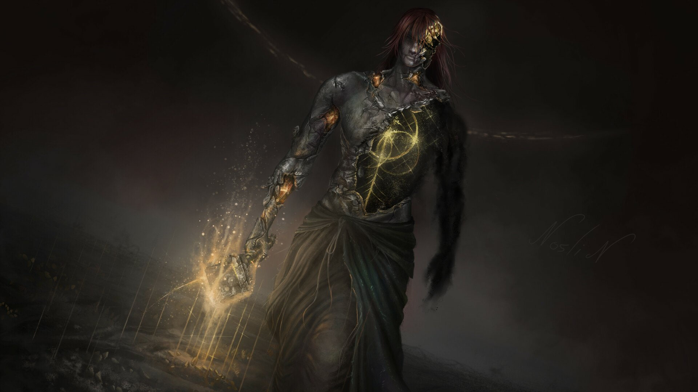
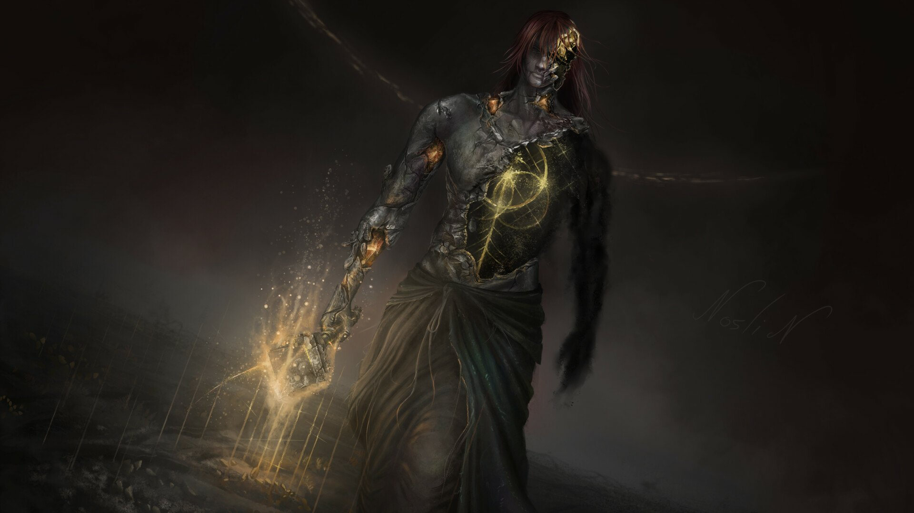

Godrick
Godrick, o Enxertado, é um dos primeiros grandes chefes de Elden Ring e senhor de Stormveil Castle. Descendente da linhagem dourada, ele é considerado o mais fraco e, em sua busca desesperada por poder, começou a enxertar partes do corpo de outras criaturas em si mesmo. Essa prática grotesca resultou em uma aparência monstruosa, com múltiplos braços, pernas e até uma cabeça de dragão que ele usa como arma. Durante a batalha, Godrick exibe uma combinação de golpes físicos poderosos e habilidades mágicas, tornando-o um adversário temível.
Rennala
Rennala, Rainha da Lua Plena, é um dos chefes mais icônicos de Elden Ring e a líder da Academia de Raya Lucaria. Ela é uma poderosa feiticeira e antiga consorte de Radagon, o que a torna uma figura central na história do jogo. Rennala é conhecida por seu domínio sobre a magia lunar e por ser uma mãe devotada, ainda que profundamente afetada pela perda e pela solidão. Durante a batalha, ela invoca um exército de estudantes e usa poderosos feitiços lunares. A luta contra Rennala ocorre em duas fases distintas, refletindo sua conexão com a magia e seu papel trágico na narrativa do jogo.
Radahn
General Radahn, também conhecido como Radahn Flagelo Estelar, é um dos chefes mais imponentes e temidos de Elden Ring. Ele é um dos filhos de Radagon e Rennala, e é conhecido por sua força descomunal e habilidade em combate. Radahn é o líder dos exércitos carianos e possui um vínculo com a gravidade, permitindo-lhe controlar tanto as estrelas quanto o campo de batalha. Após ser corrompido pela podridão escarlate, Radahn perdeu a sanidade, mas seu poder permaneceu intacto. Ele continua a lutar em um estado enlouquecido, montado em seu fiel cavalo Leonard.
Morgott
Morgott, o Rei Omen, é um dos filhos amaldiçoados de Marika e Godfrey em Elden Ring, marcado pela condição dos Omen. Apesar de ser rejeitado pela sociedade, Morgott permaneceu leal ao trono de Elden e se tornou o guardião da capital, Leyndell, escondendo sua verdadeira identidade. Durante a batalha, ele se revela um guerreiro feroz, usando uma combinação de ataques físicos rápidos e magia sagrada, invocando armas de luz dourada e espinhos para enfrentar seus inimigos. Mesmo com sua aparência monstruosa, Morgott luta incansavelmente para proteger o trono que jurou defender.
Rykard
Rykard, o Senhor da Blasfêmia, é um dos filhos de Radagon e Rennala. Ele abandonou sua herança e se entregou a uma força sombria para alcançar o poder absoluto, fundindo-se com a Serpente Devoradora de Deuses. Essa fusão transformou Rykard em uma criatura grotesca, parte homem, parte serpente, que se alimenta da força vital dos deuses e busca destruir a ordem estabelecida. Rykard representa a rebelião contra os deuses e a corrupção que vem da busca implacável por poder.
Fire Giant
O Fire Giant (Gigante de Fogo) é um dos chefes colossais em Elden Ring, encontrado nas Terras dos Gigantes, uma região coberta de neve e devastada. Ele é o último sobrevivente de uma raça antiga de gigantes que uma vez serviram à Grande Árvore Flamejante, mas que foram quase exterminados em uma guerra contra os deuses. Com uma enorme estatura e uma placa protetora cobrindo o olho no peito, que é a fonte de seu poder, o Fire Giant é um oponente formidável. O Gigante de Fogo é uma figura trágica, representando a resistência final de uma civilização quase extinta.
Maliketh
Maliketh, a Lâmina Negra, é um dos personagens mais importantes de Elden Ring, servindo como guardião da Runa da Morte. Ele é uma figura imponente e misteriosa, conhecida por sua lealdade inabalável à Rainha Marika, a quem ele jurou proteger a Runa a qualquer custo. Maliketh é temido por sua habilidade em manipular a morte, sendo capaz de imbuir sua lâmina com o poder da Runa, que pode eliminar completamente a essência vital de seus inimigos. Em sua verdadeira forma, Maliketh revela-se como um guerreiro bestial, carregando o peso da responsabilidade de preservar o equilíbrio entre a vida e a morte no mundo.
Godfrey
Godfrey, o Primeiro Elden Lord, é um dos chefes mais significativos em Elden Ring e é o primeiro consorte de Marika e o fundador da dinastia de Elden. Conhecido por sua força monumental e seu papel como líder das forças de Elden, ele foi um dos primeiros grandes guerreiros do jogo. Após sua queda em batalha, Godfrey se tornou uma figura espectral conhecida como Horah Loux, mantendo-se ligado ao poder e ao legado de sua antiga posição. Como Horah Loux, ele se torna um adversário imenso, refletindo sua grandeza passada e seu papel fundamental na história do jogo.
Radagon
Radagon é uma figura central em Elden Ring e é o consorte de Marika, com quem teve dois filhos, Malenia e Miquella, mas também possui outros três filhos, Radahn, Ranni e Rykard, frutos de sua antiga relação com Rennala. Ele é um personagem complexo, que desempenha um papel crucial na narrativa do jogo, com uma conexão profunda com a Grande Árvore e os eventos que moldam o mundo de Elden Ring. Radagon é revelado como um dos chefes finais, apresentando uma batalha desafiadora que reflete sua imensa habilidade e influência sobre o jogo.
Elden Beast
A Elden Beast é um dos chefes finais de Elden Ring e serve como o verdadeiro antagonista por trás dos eventos do jogo. Ela é a manifestação física da Grande Árvore e a encarnação da vontade do Elden Ring, sendo uma entidade cósmica de imenso poder. A Elden Beast aparece no clímax do jogo e representa a força primordial que molda o mundo. Seu combate é marcado por ataques etéreos e cósmicos, refletindo sua natureza divina e sua conexão profunda com a essência do Elden Ring.
Placidusax
Placidusax é um dos chefes ocultos em Elden Ring e um dos dragões mais antigos e poderosos do jogo. Ele é um dragão de duas cabeças que foi um dos maiores servos da Grande Árvore. Placidusax tem uma aparência majestosa e ameaçadora, com sua pele coberta de escamas douradas e suas cabeças possuindo um poder devastador. Durante a batalha, ele usa uma combinação de ataques físicos e mágicos, e seu combate é notável por seu grande alcance e por suas habilidades associadas ao controle do tempo e do espaço. Placidusax representa uma das forças primordiais e esquecidas que ainda permeiam o mundo de Elden Ring.
Mohg
Mohg, o Senhor do Sangue, é um dos chefes mais sinistros e complexos de Elden Ring. Ele é um dos filhos amaldiçoados de Marika e Godfrey e irmão de Morgott. Mohg é obcecado pelo poder da Runa da Morte e busca dominar e expandir sua influência através do culto ao sangue. Sua luta é marcada por ataques brutais e uma profunda conexão com a magia do sangue, incluindo a capacidade de invocar e controlar fluidos sanguíneos para atacar seus inimigos. Ele representa uma ameaça apocalíptica, buscando instaurar um reino de caos e destruição.
Malenia
Malenia, a Senhoria da Lâmina, é uma das chefes mais desafiadoras e memoráveis de Elden Ring. Ela é a irmã gêmea de Miquella e filha de Radagon e Marika, e é conhecida por sua habilidade incomparável com a espada e por sua condição de imortal devido à sua luta contra a doença que afeta seu corpo. Malenia é uma guerreira formidável e possui uma aparência marcante, com uma lâmina afiada e habilidades que giram em torno de ataques rápidos e letais. Sua batalha é famosa por sua dificuldade e pelo fato de que, a cada ataque que ela acerta, ela recupera parte de sua própria saúde, tornando o confronto particularmente exigente e intenso.
Let Me Solo Her
"Let Me Solo Her" é um famoso jogador e conhecido membro da comunidade de Elden Ring por derrotar a Malenia (conhecida como a chefe mais difícil do jogo) mais de 1000 vezes para outros jogadores. Ele se tornou uma lenda por oferecer ajuda a outros jogadores para derrotar Malenia, a Senhoria da Lâmina. Vestido apenas com uma panela na cabeça e empunhando duas espadas largas, ele se destaca por sua habilidade excepcional e sua disposição em ajudar jogadores a vencer uma das batalhas mais desafiadoras do jogo. Seu nome se tornou um símbolo de generosidade e destreza dentro da comunidade de Elden Ring.